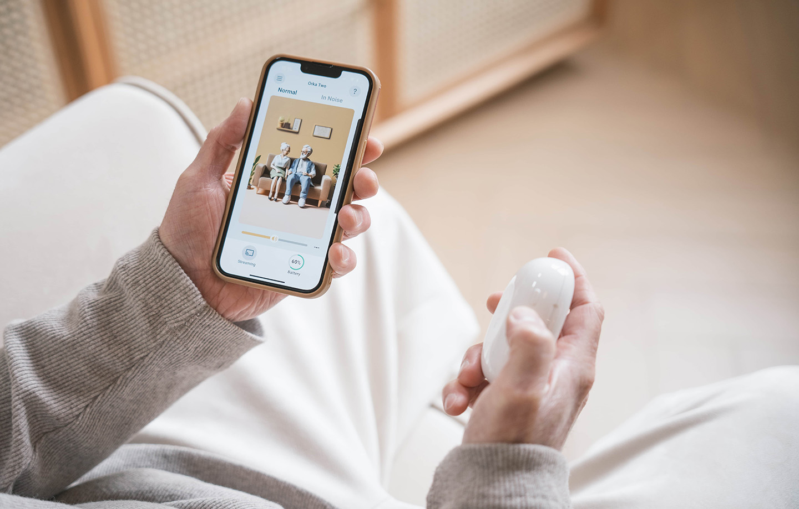
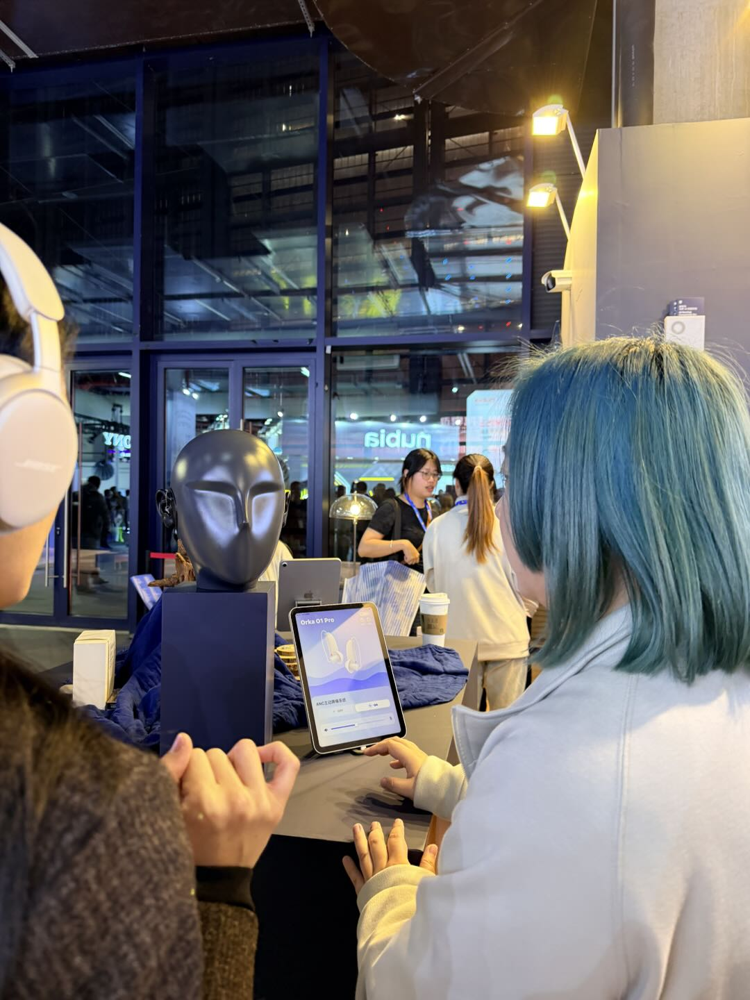
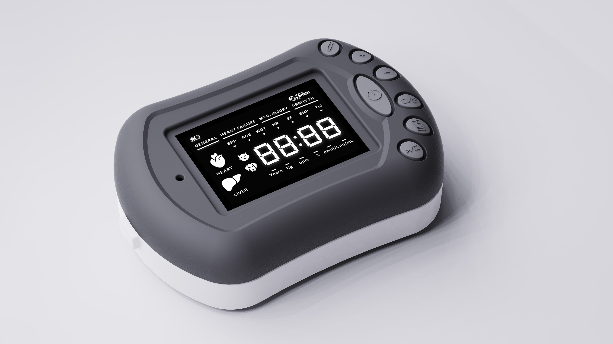
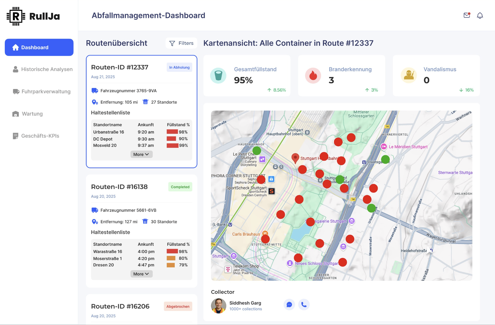
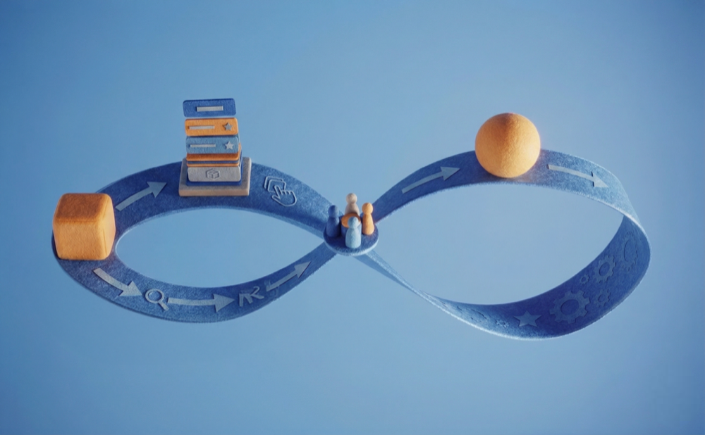
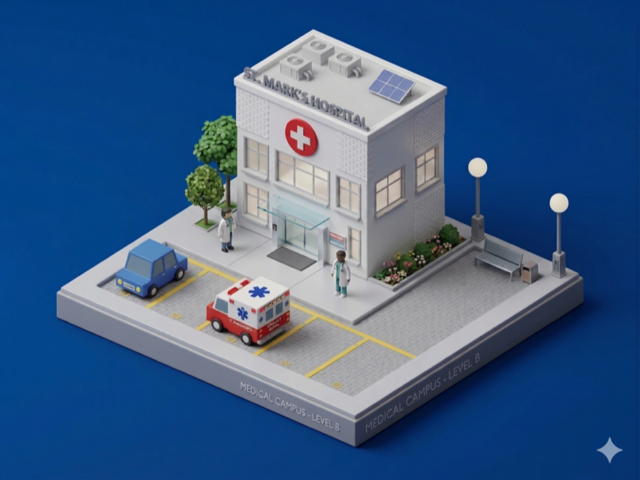
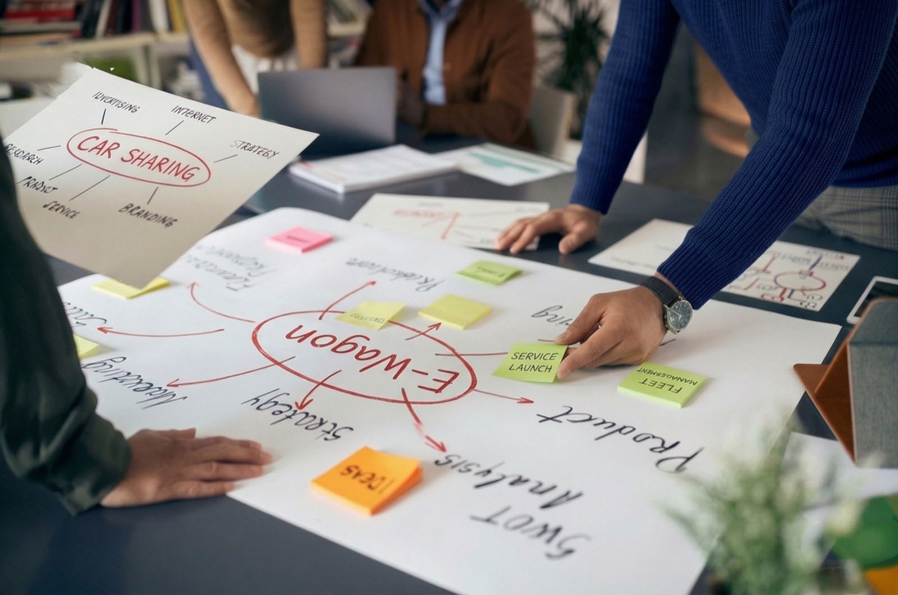
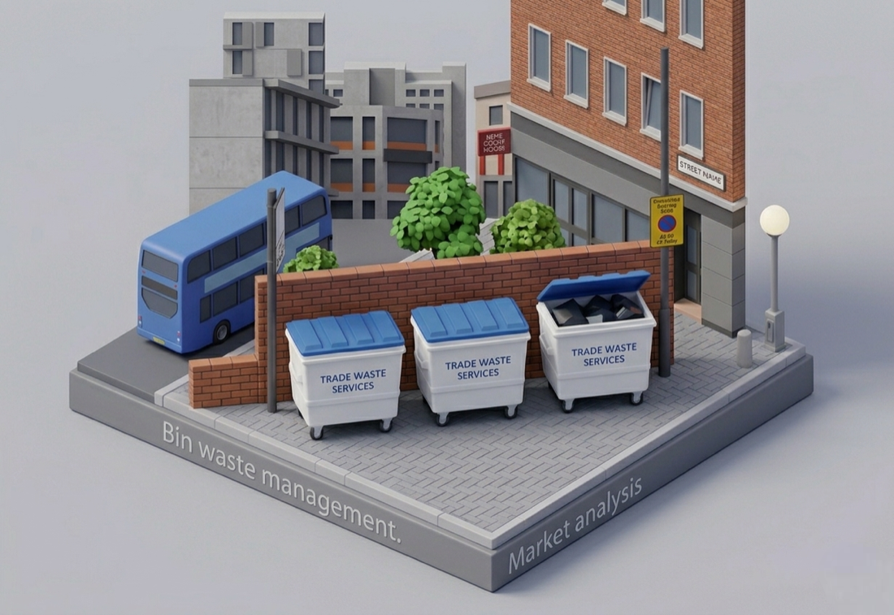

Orka Two Hearing Aids App Onboarding design
Redesigned the Gen 2 onboarding experience to guide users through crucial device adjustment periods. Delivered an average 5.3/7 user satisfaction score to drastically cut device returns.

Orka Digital Product Design
Rehired after a two-year hiatus to consult on product design strategy. This work is ongoing and strictly under NDA.

PetsTech Cardiac Monitor UI Design
Designed the interface for a 20,000 CNY pet cardiac device. Every pixel is a hardware decision on a segment LCD. Three concepts, one shipped.

RullJa IoT Dashboard — Investor Concept Demo
Built an interactive dashboard prototype for a waste-tech startup pitching IoT fill-level sensors to investors. Concept only. Backed by market research showing a €100M+ addressable segment in Germany.

Developing CPS as Entrepreneurs: Agile Development in Startups and SMEs
Master thesis selected by IPEK for publication at ECIE 2025. SLR of 1,929 papers — using a structured AI extraction workflow with Perplexity and manual validation — mapping how agile adapts across startup, SME, and enterprise contexts in CPS engineering.

German Telehealth Infrastructure: Structural Mapping for Threat Modeling
Commissioned by a KIT doctoral researcher in critical infrastructure cybersecurity. Mapped the integration architectures of German hospital networks — PORT and NEVAS — as a structural baseline for NIS2 threat modeling.

Ideation of e-Wagen simplification @ Mercedes-Benz plant Sindelfingen
Ethnography on the Mercedes-Benz factory floor — personas, journey maps, and full service design for e-trolley sharing.

Rullja Smart Bin Sensor — Market Research Report
Market analysis for a German IoT startup — TAM/SAM/SOM sizing, 10-competitor matrix, buyer segmentation, regulatory landscape, and a three-phase go-to-market strategy for municipal entry.
Transform Product Engineering Knowledge into AI Consultant Service
Built 2 AI consulting MVPs for KIT's engineering institute — InnoFox Coach and Project Type Assessor. 50+ students using, 100% budget saved, shipped in half the time.
Cincobox Bill AutoBot
A quality inspection firm's CEO was burning one full day every month on manual invoicing, so I restructured his client order database and built an invoice automation tool in Google Sheets by agentic coding.